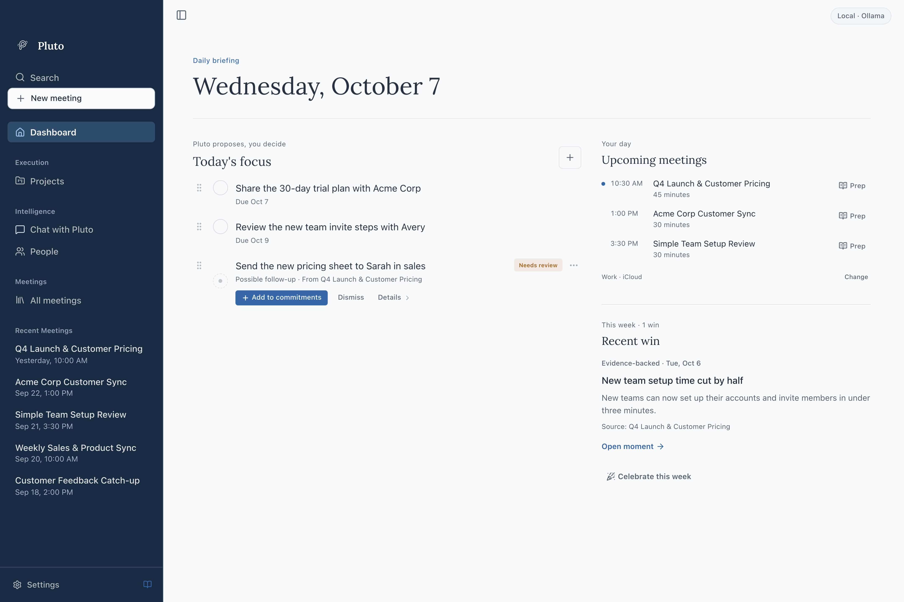
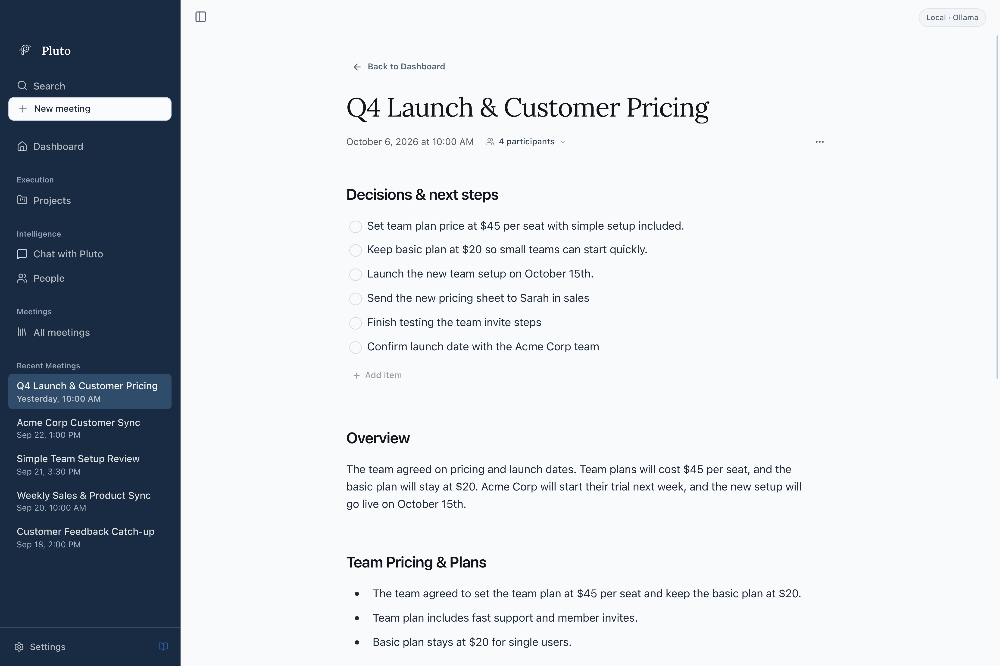
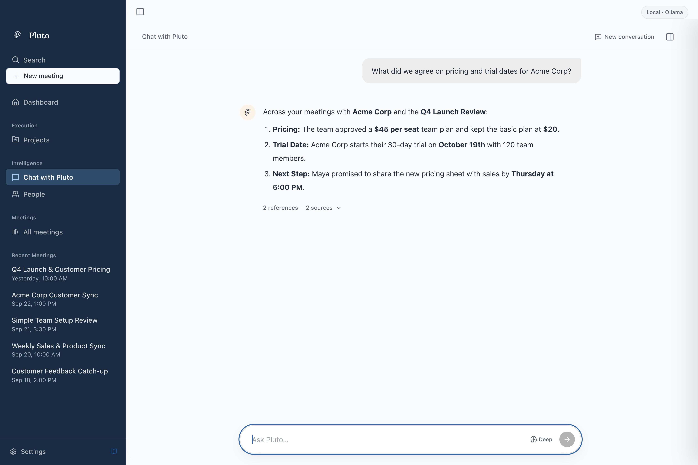
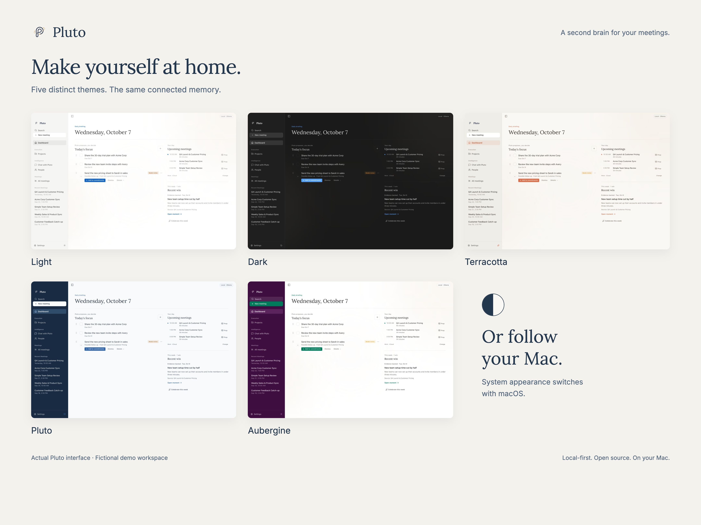

A familiar voice.
A name you know.
Confirm who’s speaking. Pluto can recognize clear voice matches in future meetings.
A familiar voice
Maya ChenRecognized next time
Stay present. Pluto recognizes familiar voices and connects the people and projects across your meetings. Ask Pluto, or bring your notes into ChatGPT.
For Apple Silicon Macs · No meeting bot
“Let’s launch on Monday. I’ll send the final copy on Friday.”
Campaign planning · 08:24Illustrative example · linked to the original conversation
A place to return to the decisions, follow-ups, and conversations that matter. This is Pluto, with a fictional product team at work.




Confirm who’s speaking. Pluto can recognize clear voice matches in future meetings.
Bring the decisions, commitments, and recurring themes from your conversations into one connected memory.
Ask Pluto connects your meetings, people, and projects to answer the question on your mind. Follow the citations back to the source.
Maya owns the rollout. The revised plan is due Thursday.
You promised to send Maya the customer email draft by Friday.
What Pluto remembers
Illustrative example. Voice ID uses local voice profiles to help recognize people you’ve confirmed before. You can review and correct speaker labels.
Bring your meeting notes into the conversation you’re already having. Mention Pluto. Pick up the thread.
Connect to ChatGPT Both apps on the same Mac. Retrieved notes go to OpenAI; raw transcripts and recordings are excluded. ChatGPTWork
ChatGPTWorkWe decided to launch on Monday.
Maya is sending the final copy on Friday. That’s the next follow-up before launch.
Your history lives on your Mac. Choose your database setup, your AI provider, and whether to connect your notes to ChatGPT.
Recording, transcription, and storage happen locally. Voice profiles stay on your Mac, too.
Choose Standard or Encrypted when setting up a new profile. Encrypted setup protects your meeting database with a key stored through macOS Keychain.
Use a model on your Mac or connect a cloud provider. The optional ChatGPT connection shares retrieved notes with OpenAI.
Encrypted setup covers the database, including stored notes, transcripts, and voice profiles. Recording files are not encrypted by default. Existing profiles keep their current setup.
Pluto sends relevant conversation text to your selected provider for notes and answers. Recording and transcription still happen on your Mac.
No. Pluto captures microphone and system audio on your Mac, without sending a bot into your meeting. Make sure everyone is comfortable with recording before you begin.
Export one meeting’s notes as a Markdown file. In Settings, choose whether exports include the transcript. Review the file before sharing it.
Your recordings and meeting data are stored locally, and transcription runs on your Mac. Notes and answers can also be generated locally. If you connect a cloud AI provider, relevant text is sent to that provider for processing. The optional ChatGPT connection sends retrieved meeting notes to OpenAI.
After you confirm who a speaker is, eligible voice samples build a local voice profile. In future meetings, a clear match can automatically map that voice to the person you’ve identified. If the evidence is unclear, you can identify the speaker manually. Review or correct labels, and manage or delete saved voice samples in People.
The optional Pluto plugin lets ChatGPT find and read your meeting notes. Enabling it makes all notes available through the connection, and retrieved notes are sent to OpenAI. It does not share raw transcripts or recordings, or change your meetings. Disable access in Pluto Settings to stop future reads; previously shared notes remain in ChatGPT.
New profiles choose Standard or Encrypted setup before getting started. Encrypted setup encrypts the meeting database and uses macOS Keychain to store its key; it may ask for permission. Standard setup has no app-level database encryption. This choice is fixed for the profile, and existing profiles keep their current format. Audio recordings are not encrypted by default.
Pluto is built for Apple Silicon Macs. Intel Macs, Windows, and Linux are not currently supported.
Ask Pluto provides cited answers grounded in your meeting history, so you can return to the source and review the surrounding context.

Keep the context. Follow through. Make room for what’s next.
Get Pluto for MacApple Silicon · macOS 14.2 or later